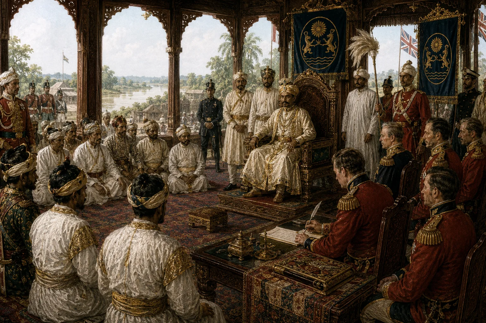

Restoration of Purandar Singha as Protected Tributary Ruler
April 1833 · The last Swargadeo

British East India Company reinstates Purandar Singha over Upper Assam conditioned on paying an impossible annual tribute of 50,000 Company rupees.
Sources have not yet been catalogued for this record.
People: Purandar Singha, Thomas Campbell Robertson
Open this scene in the interactive archive · Follow this event on MAP